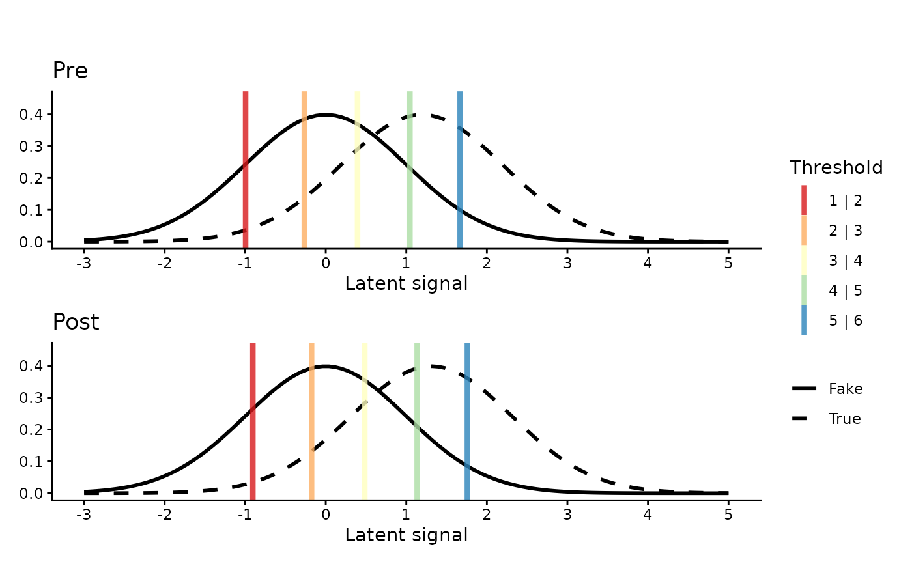

Latent SDT distributions of a frequentist ordinal regression model
Source:R/SDT_distribution_plot.R
SDT_distributions_plot.RdPlots the latent ("perceived signal") distributions implied by a
cumulative link model fitted with ordinal::clm() or ordinal::clmm(),
together with the estimated response thresholds (criteria), in the style
of signal detection theory (SDT). One panel is drawn for every level of
var_group, optionally split by a third variable (var_facet).
Usage
SDT_distributions_plot(
model,
var_signal,
var_group,
var_facet = NULL,
plot_limits = c(-3, 5),
palette = 9,
alpha = 0.8,
signal_labels = NULL,
group_labels = NULL,
facet_labels = NULL,
ttl = "",
x_label = "Latent signal"
)Arguments
- model
A
clmorclmmordinal regression model.- var_signal
Name (string) of the 2-level factor playing the role of the SDT signal, e.g. old/new or true/fake.
- var_group
Name (string) of a 2-level factor covariate; one ROC curve is drawn per level.
- var_facet
Optional name (string) of a second 2-level factor covariate; one panel is drawn per level.
- plot_limits
Numeric vector of length 2: x-axis limits of the latent scale.
- palette
Integer index of a diverging palette passed to
ggplot2::scale_color_brewer()for the threshold lines.- alpha
Opacity of the threshold lines.
- signal_labels
Optional character vector of length 2 with legend labels for the two latent distributions (reference level first). Defaults to the title-cased levels of
var_signal.- group_labels
Optional character vector of length 2 with panel titles for the levels of
var_group. Defaults to its title-cased levels.- facet_labels
Optional character vector of length 2 with panel titles for the levels of
var_facet. Defaults to its title-cased levels.- ttl
Plot title.
- x_label
Label of the x (latent) axis.
Value
A patchwork object combining the panels.
Details
The latent distribution follows from the model's link function: normal
for probit (the classic SDT display), logistic for logit, Cauchy for
cauchit, and Gumbel for cloglog/loglog. All latent distributions
have unit scale (scale/disc effects are not supported). Models without
some interaction terms are supported: terms the model does not contain
are simply treated as zero.
See also
bayesian_SDT_distribution_plot() for brms::brm() models, and
roc_plot() for the corresponding ROC curves.
Examples
fit <- ordinal::clm(value ~ target * time, data = sdt_ratings, link = "probit")
SDT_distributions_plot(fit, var_signal = "target", var_group = "time")
